Differential Overhaul
BACKLASH INSPECTION
1. Place differential assembly on V-blocks and install both axles.
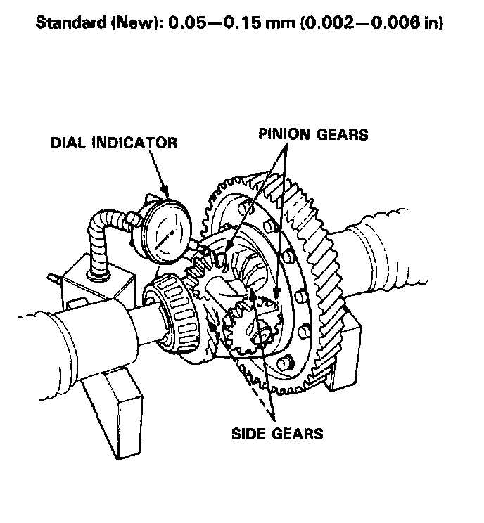
2. Measure the backlash of both pinion gears.
3. If the backlash is not within the standard, replace the differential carrier.
FINAL DRIVEN GEAR REPLACEMENT
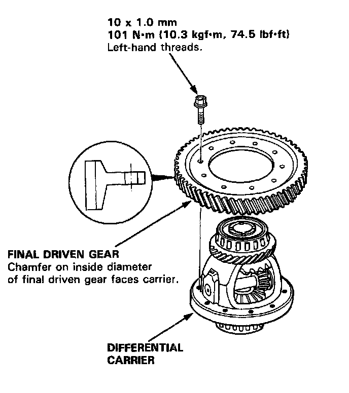
1. Remove the bolts in a crisscross pattern in several steps, then remove the final driven gear from the differential carrier.
NOTE: The final driven gear bolts have left-hand threads.
2. Install the final driven gear by tightening the bolts in a crisscross pattern in several steps.
TAPERED ROLLER BEARING REPLACEMENT
NOTE:
- The tapered roller bearing and bearing outer race should be replaced as a set.
- Inspect and adjust the tapered roller bearing preload whenever the tapered roller bearing is replaced.
- Check the tapered roller bearings for wear and rough rotation. If tapered roller bearings are OK, removal is not necessary.
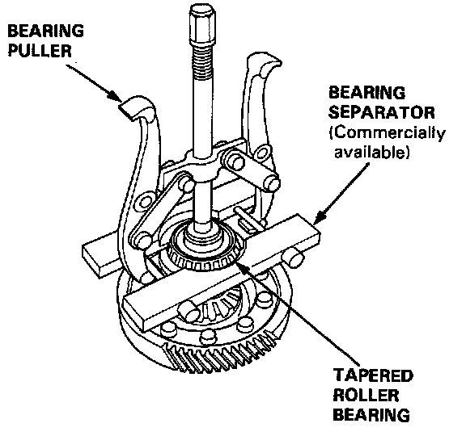
1. Remove the tapered roller bearings using a bearing puller and bearing separator as shown.
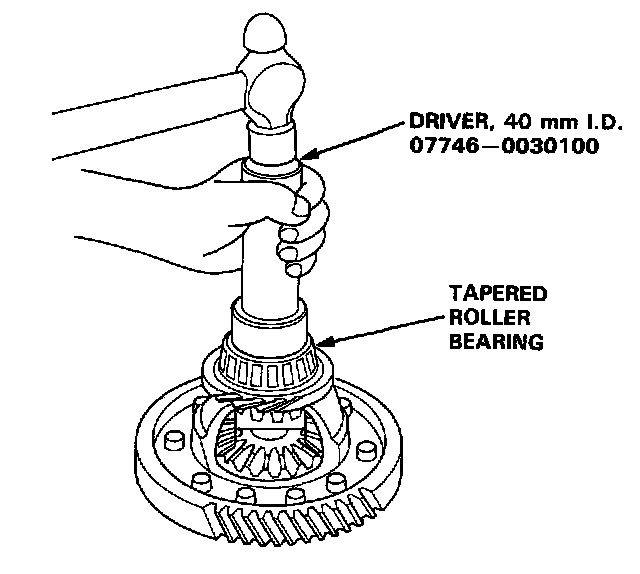
2. Install new tapered roller bearings using the special tool as shown.
NOTE: Drive the tapered roller bearings on until they bottom against the differential carrier.
OIL SEAL REMOVAL
1. Remove the differential assembly.
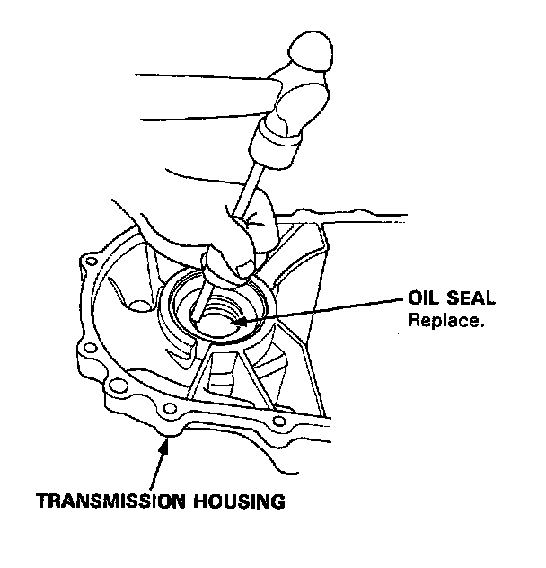
2. Remove the oil seal from the transmission housing.
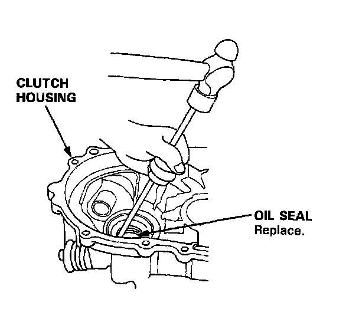
3. Remove the oil seal from the clutch housing.
BEARING OUTER RACE REPLACEMENT
CAUTION: Do not reuse the thrust shim and the 79.5 mm shim if the outer race was driven out.
NOTE:
- The bearing outer race and tapered roller bearing should be replaced as a set.
- Inspect and adjust the tapered roller bearing preload whenever the tapered roller bearing is replaced.
1. Remove the oil seals from the transmission housing and clutch housing.
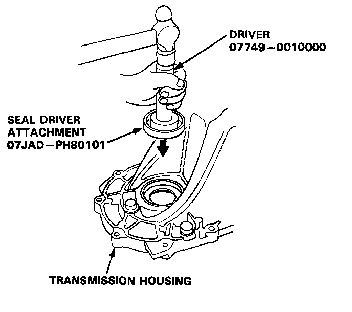
2. Remove the bearing outer race, the thrust shim, and the 79.5 mm shim from the transmission housing.
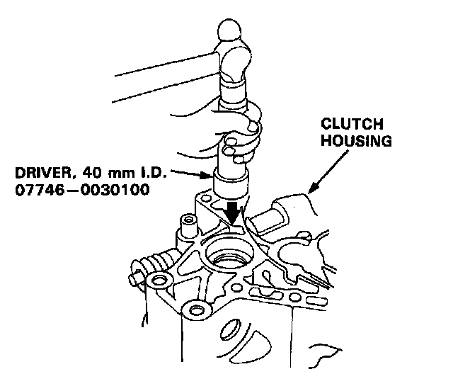
3. Remove the bearing outer race and thrust shim from the clutch housing.
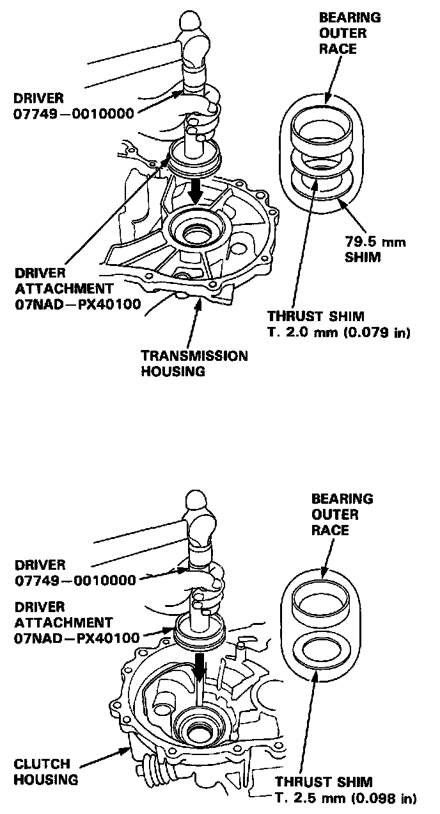
4. Install the new thrust shim and 79.5 mm shim, then drive the bearing outer races in the both housings using the special tools as shown.
NOTE:
- Install the bearing outer race squarely.
- Check that there is no clearance between the bearing outer race, thrust shim, and transmission housing.
5. Install the oil seal.
TAPERED ROLLER BEARING PRELOAD ADJUSTMENT
NOTE: If any of the items listed below were replaced, the tapered roller bearing preload must be adjusted.
- Transmission housing
- Clutch housing
- Differential carrier
- Tapered roller bearing and bearing outer race
- Thrust shim
1. Remove the bearing outer race, the thrust shim, and the 79.5 mm shim from the transmission housing.
CAUTION: Do not reuse the thrust shim if the bearing outer race was driven out.
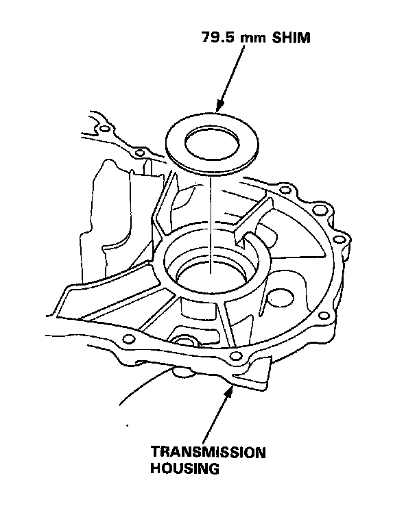
2. First try the same size 79.5 mm shim that was removed.
CAUTION: Do not use more than two shims.
3. Install the thrust shim and 79.5 mm shim, then drive the bearing outer race in the transmission housing.
NOTE:
- Install the bearing outer race squarely.
- Check that there is no clearance between the bearing outer race, thrust shim and transmission housing.
4. With the mainshaft and countershaft removed, install the differential assembly, and torque the clutch housing and transmission housing.
8 x 1.25 mm 27 Nm (2.8 kgf.m, 20 ft. lbs.)
NOTE: It is not necessary to use sealing agent between the housings.
5. Rotate the differential assembly in both directions to seat the tapered roller bearings.
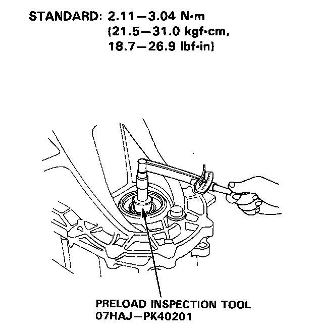
6. Measure the tapered roller bearing preload of the differential assembly with the special tool and a torque wrench.
NOTE: Measure the tapered roller bearing preload in both directions.
7. If the tapered roller bearing preload is not within the standard, select the 79.5 mm shim from the following table which will give the tapered roller bearing preload closest to the standard mean value of 2.50 Nm (25.5 kgf.cm, 22 inch lbs.).
NOTE: Changing the 79.5 mm shim to the next size will increase or decrease tapered roller bearing preload about 0.3 - 0.4 Nm (3 - 4 kgf.cm, 2.6 - 3.5 inch lbs.).
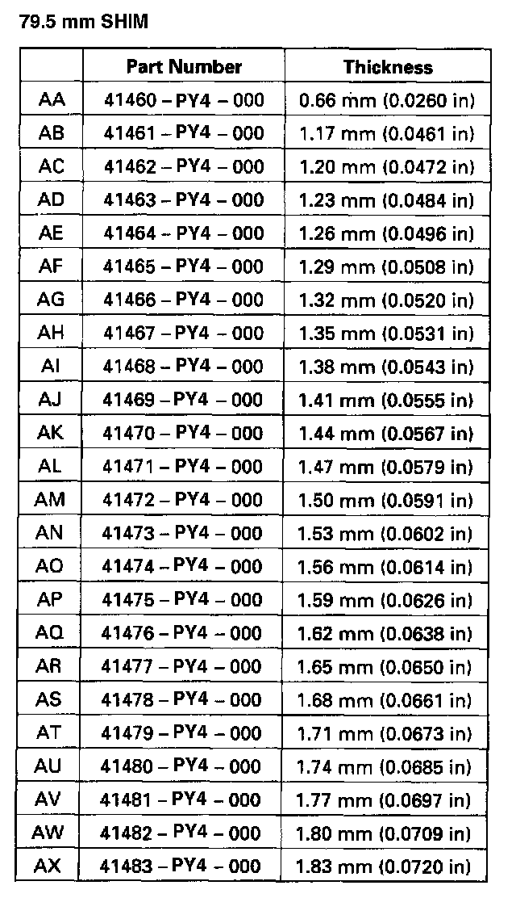
8. Recheck the tapered roller bearing preload.
9. How to select the correct 79.5 mm shim:
-1) Compare the tapered roller bearing preload you get with the 79.5 mm shim that was removed with the specified mean preload of 2.50 Nm (25.5 kgf.cm, 22 inch lbs.).
-2) If your measured tapered roller bearing preload is less than specified, subtract your's from the specified.
If your's is more than specified, subtract the specified from your measurement.
For example with a 1.38 mm (0.0543 inch) shim:
(A) specified 2.50 Nm (25.5 kgf.cm, 22 inch lbs.)
- you measure 0.54 Nm (5.5 kgf.cm, 5 inch lbs.)
2.0 Nm (20 kgf.cm, 18 inch lbs.) less
(B)you measure 3.29 kg-m (33.5 kgf.cm, 29 inch lbs.)
- specified 2.50 Nm (25.5 kgf.cm, 22 inch lbs.)
0.8 Nm (8 kgf.cm, 7 inch lbs.) more
-3) Each shim size up or down from standard makes about 0.3 - 0.4 Nm (3 - 4 kgf.cm, 2.6 - 3.5 inch lbs.) difference in tapered roller bearing preload.
- In example (A), your measured tapered roller bearing preload was 2.0 Nm (20 kgf.cm, 18 inch lbs.) less than standard so you need a 79.5 mm shim five sizes thicker than standard (try the 1.53 mm (0.0602 inch) shim and recheck).
- In example (B) your's was 0.8 Nm (8 kgf.cm, 7 inch lbs.) more than standard, so you need a thrust shim two sizes thinner (try the 1.32 mm (0.0520 inch) shim and recheck).
10. After adjusting the tapered roller bearing preload, assemble the transmission, and install the transmission housing.
8 x 1.25 mm 27 Nm (2.8 kgf.m, 20 ft. lbs.)
11. Rotate the differential assembly in both directions to seat the tapered roller bearings.
OIL SEAL INSTALLATION
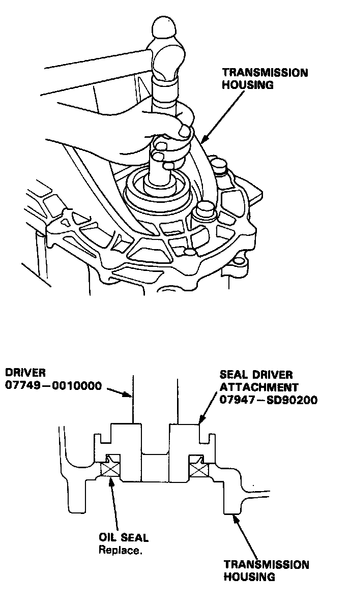
1. Install the oil seal into the transmission housing using the special tools as shown.
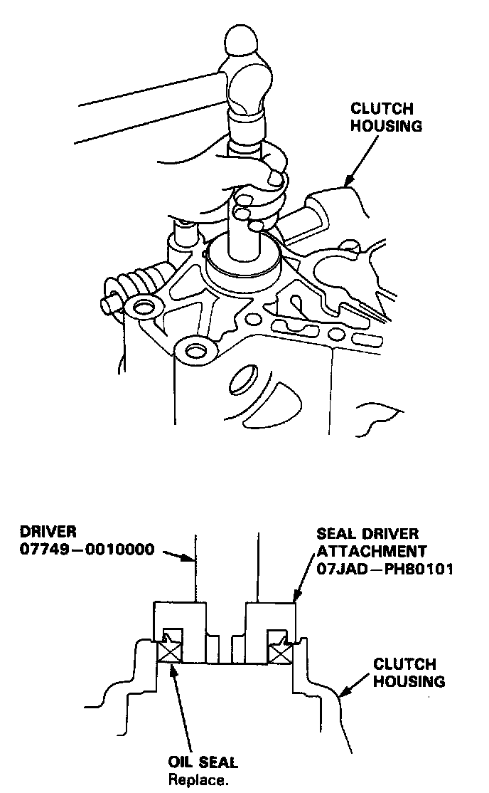
2. Install the new oil seal into the clutch housing using the special tools as shown.